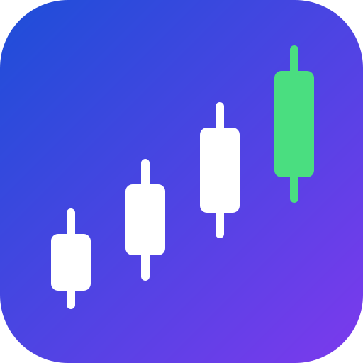

Live prices with a simple trend signal and its backtested accuracy
Get a browser notification whenever a coin or watchlist stock's trend flips to up or down, a symbol becomes a potential mover (see below), or a new headline shows up in the News section further down. This only works while this tab stays open in your browser — there's no server behind this page, so it can't notify you after you close it. A trend or mover alert also gets its row highlighted in the tables below for a couple of minutes, so it's easy to spot at a glance.
Set a specific price to watch, separate from the trend/mover alerts above — you'll get a notification the moment a coin or watchlist stock crosses it, in either direction, the next time this page polls while live alerts are enabled. Each alert fires once, then removes itself.
Coins or watchlist stocks currently near their recent low (within 10% for crypto, 5% for stocks) with an upward trend signal — a naive "possible bounce" heuristic combining two already-naive signals from below. "Historical accuracy" is how often that same trend signal has been right in the past (same figure as the Crypto/Stocks tables below) — a measured track record, not a promise about what happens next. Most beaten-down assets stay beaten down; this is not a prediction of a reversal, and definitely not investment advice. Stocks only show up here with a Twelve Data key entered (needed for their price history).
| Symbol | Price | Above recent low | Trend | Historical accuracy |
|---|---|---|---|---|
| Loading… | ||||
This page shows two things for each coin or stock:
Use the Trending up / Trending down buttons above each table to filter the list down to whatever's currently leaning that direction. Nothing here tells you what to buy or sell — it's meant for learning how these signals behave, not for making real decisions.
Flip a fair coin 8 times and you won't always get exactly 4 heads — sometimes you'll get 5 or 6, purely by chance. The fewer times you flip, the more a lucky streak can look like a pattern. The same is true here: with only 8 backtested tries, getting 5 right (63%) is barely more than plain random guessing would produce, even if the underlying signal has zero real predictive power.
Each accuracy figure is checked against that coin-flip
baseline using a rough standard-error calculation:
sqrt(0.25 / trials). If the accuracy is within
about one standard error of 50%, it's labeled
"not statistically different from a coin flip"
— which, on this page, is most of the time. A wider gap
gets called "a weak signal", or rarely
"unusual for a coin flip" — but even a
wide gap on a small, recent sample is not proof of a real,
repeatable edge.
This is a simplification, not a textbook significance test — backtest trials come from overlapping windows on the same price series, so they aren't fully independent the way the math technically assumes. It's meant to honestly catch the common case (small numbers are noisy), not to make a rigorous statistical claim.
Runs the naive trend signal used everywhere else on this page alongside two other naive strategies — a moving-average crossover and RSI — over the same recent price history for one symbol, backtested the same walk-forward way (see "New here?" above for what that means). RSI is read as mean-reversion (oversold/overbought), the opposite bet from the other two, which follow momentum — so it's normal for them to disagree. None of this is investment advice; it's a way to see that different naive rules can point different directions, and how often each has actually been right.
Crypto accepts a CoinGecko id or ticker, same as elsewhere on this page. Stocks need the Twelve Data key from the Stocks section below (Finnhub's free tier doesn't include history).
| Strategy | Signal | Historical accuracy |
|---|---|---|
| Pick a symbol above and click "Compare strategies." | ||
| Coin | Price (USD) | 24h Change | Trend | Accuracy |
|---|---|---|---|---|
| Loading… | ||||
Stock data needs a free API key. If you don't have one yet:
Finnhub's free tier doesn't offer a market-wide "top movers" feed — that needs a paid plan. Instead, the watchlist below is pre-filled with a default set of 20 well-known large-cap stocks across sectors; add your key(s) and scan it. Edit the list to whatever symbols you actually care about — more symbols also means more chances for the Potential Movers section further down to actually find something, since it can only flag stocks that are in this list to begin with.
Trend and accuracy need a second, optional key. Finnhub's free plan doesn't include historical candle data at all (that's paid there), so trend/accuracy instead come from Twelve Data, whose free tier does include daily history. Sign up for a free key at twelvedata.com/register and paste it below too. Without it, price and 24h change still work fine via Finnhub — you'll just see "add Twelve Data key" in the trend/accuracy columns instead. Twelve Data's free tier has a tight per-minute limit, so scans are deliberately slow when this key is present — with the default 20-symbol watchlist, expect a full scan to take roughly 2-3 minutes. Trim the list if that's too slow for you.
| Symbol | Price (USD) | Change | Trend | Accuracy |
|---|---|---|---|---|
| Enter a key and one or more symbols above. | ||||
Interactive candlestick chart — drag to pan, scroll/pinch to zoom, hover for exact open/high/low/close. Crypto uses CoinGecko's OHLC data (no key needed); stocks need the Twelve Data key from the Stocks section above (the same one used for stock trend/accuracy) — Finnhub's free plan doesn't include this data, same limitation as elsewhere on this page.
Crypto headlines attempt to load via CoinStats (no key needed) — if that fails, you'll see a few links to well-known crypto news sites instead. Market news via the same Finnhub key entered in the Stocks section above. Headlines only — nothing here is analyzed or scored, just linked out to the original source.
Practice buying and selling with fake money, at real live prices. ↑ back to the dashboard
Export saves your cash, holdings, options, and trade history as a JSON file — useful as a backup, or to move your paper portfolio to another browser. Import replaces your current portfolio with one from a previously exported file.
Crypto accepts CoinGecko IDs
(e.g. bitcoin) or common tickers (e.g. btc) —
tickers are looked up automatically. Stocks use the same Finnhub
key entered in the Stocks section above.
| Symbol | Quantity | Avg cost | Current price | Market value | Unrealized P/L |
|---|---|---|---|---|---|
| No holdings yet — place a trade above. | |||||
An option is a contract that gives you the right, but not the obligation, to buy or sell an asset at a fixed price (the strike) on or before a set expiration date. To get that right, you pay an upfront cost called the premium — that's the price shown in the order form below.
Buy a call when you expect the price to go up. It gains value as the underlying rises above the strike, and becomes more valuable the further above strike it goes.
Buy a put when you expect the price to go down. It gains value as the underlying falls below the strike, and becomes more valuable the further below strike it goes.
You buy 1 call option for a $3 premium. The stock crashes to $0 before expiration. What's your loss?
Which one gains value as the underlying price falls?
An option with 30 days left is generally worth more than an identical option with only 5 days left, all else equal. Why?
1 contract = 1 unit of the underlying here (simplified from the standard 100-share equivalent), to keep the numbers easy to follow. Crypto accepts tickers or CoinGecko ids, same as the trade form above; stocks use the same Finnhub key.
| Contract | Expires | Qty | Premium paid | Current value | P/L | |
|---|---|---|---|---|---|---|
| No option positions yet. | ||||||
| Time | Action | Symbol | Quantity | Price | Realized P/L |
|---|---|---|---|---|---|
| No trades yet. | |||||
Close at least 3 winning and 3 losing trades to see a pattern here.
Every term below is explained in context somewhere on this page (in the Options section, the "New here?" box, or the Paper Trading panels) — this is just all of it in one place, grouped by topic, for whenever you land partway down the page.